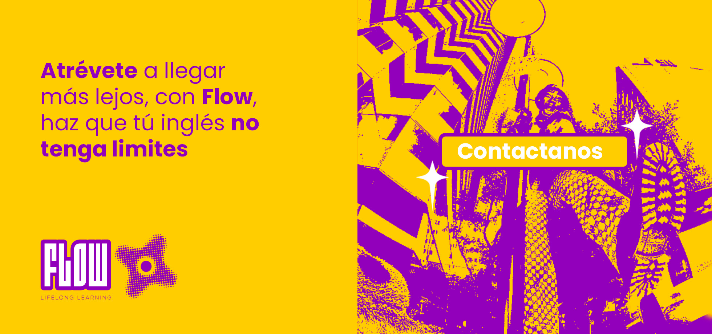
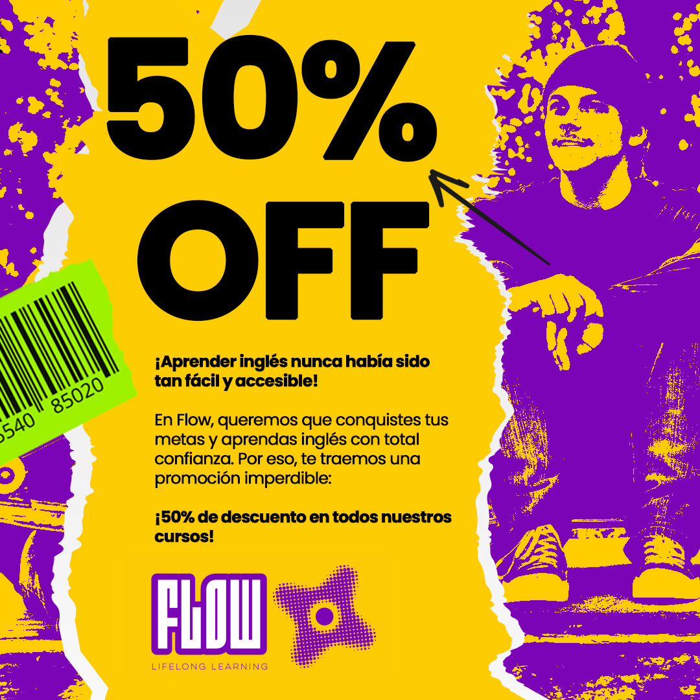
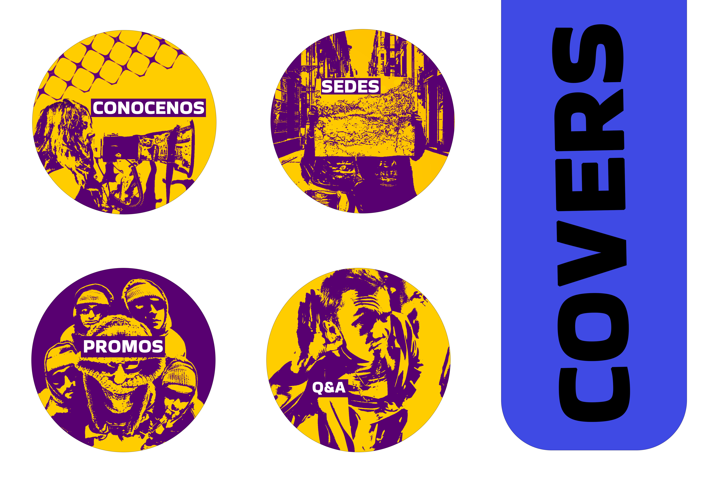
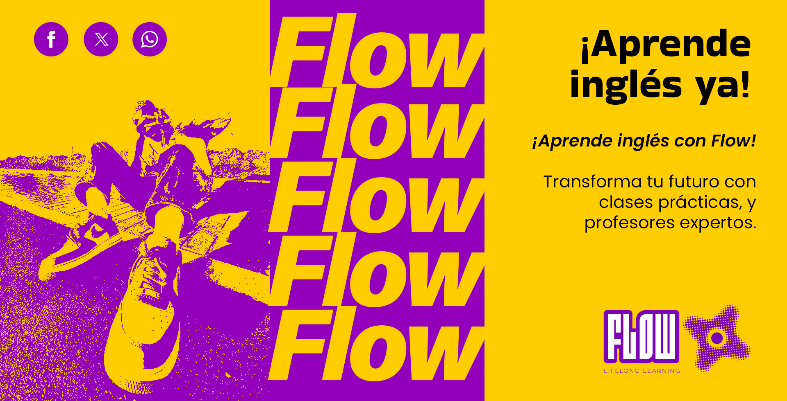

Galería





El proyecto Flow se centró en la creación de una identidad visual moderna y versátil para una academia de inglés que lanzaba dos productos: Workshop y Business. El objetivo fue transmitir dinamismo, accesibilidad y profesionalismo, diferenciando los productos mediante colores y estilos únicos. El resultado fue una marca fresca y memorable que conecta con estudiantes jóvenes y profesionales en busca de una experiencia de aprendizaje más práctica y personalizada.